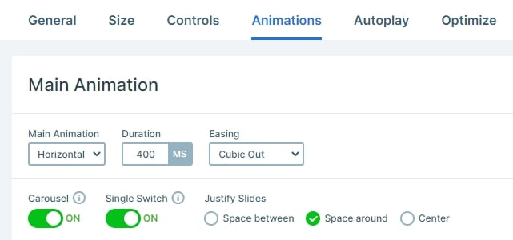

I’ve been searching for a good free slider plugin for a long time. This is definitely the one! For a free plugin it does a lot of things!
Smart Slider 3 is more than powerful. It is amazing.Thanks to developer for putting so much effort to create this well-thought plugin.
DIANA MILLER
HMarketing Manager
The backend of the plugin is beautifully designed and fairly intuitive – although there are so many options, it’s almost daunting.
RYAN VIDAL
Interactive Designer
If there was a 10 start I’d give it. When I found Smart Slider 3 instantly knew that this was the premium slider I needed for all my projects.
JANE LINN
Community Manager
I’ve been searching for a good free slider plugin for a long time. This is definitely the one! For a free plugin it does a lot of things!
ZACK SALOMON
Head Developer
Cannot recommend this plugin highly enough. Get the Pro version. Use the Slider and all your website dreams will come true.
JAMES SMITH
PHP Developer
Testimonial Carousel
DESCRIPTION: Display your product testimonials in an elegant and modern way, using a testimonials slider.
PREMIUM: Gain access to all slider templates with a single purchase .
MINIMUM VERSION: 3.5.1.3
Settings
Minimalism and simplicity are the two expressions that surround the Testimonial Carousel slider. Displaying testimonials doesn’t always need fancy stuff. It’s not the effect that will convince your hesitant visitors to be your customers. The slider above isn’t fancy, it uses its minimalist design to convert. It has all testimonial slider requirements: the customer’s words, name, image and occupation. You can see all information the slider displays in a simple but clear way.
The slider has three different navigation options. The two most obvious are the arrows and bullets. The arrows are placed at the left and right side of the slider. They take a minimalistic approach, and their white color is easy to see on the blue background. You can find the bullets at the bottom of the slider. Just like the arrows, they have white color, although with a slight opacity. The active bullet is marked with an empty circle, which means it has only border but not background. The third way to switch slides is to click on them. Each slide has a custom link action to switch to the next or previous slide. This custom navigation makes the WordPress Carousel look and feel special. You can use the layout in your dynamic slide generator to create dynamic testimonials.
Layers
Minimalism and simplicity are the two expressions that surround the Testimonial Carousel slider. Displaying testimonials doesn’t always need fancy stuff. It’s not the effect that will convince your hesitant visitors to be your customers. The slider above isn’t fancy, it uses its minimalist design to convert. It has all testimonial slider requirements: the customer’s words, name, image and occupation. You can see all information the slider displays in a simple but clear way.

Animations
This carousel slider has a horizontal main animation, so when you switch slide, it will move horizontally. The single switch option is enabled, so you can switch only one slide.

Responsive
By default controls like arrows or bullets are hidden on mobile, but at this slider they are visible. At carousels you can display only whole slides, so you can’t display a part of other slides. If you check it on mobile, you can notice that one slide is visible, but thanks for the controls, your visitor can notice there are more slides.
Best Testimonial Slider Examples for WordPress
All You Need To Know About Carousel Slider Type
Similar Sliders - Testimonial Slider


Join the community
Follow us and stay connected and updated.
Subscribe our newsletter
And receive the latest news from Smart Slider.